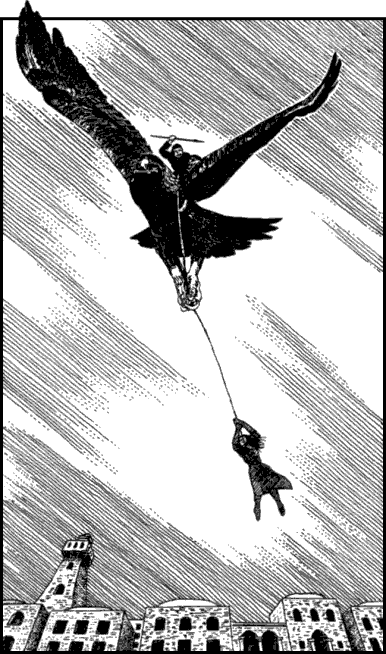

289
The crowd scream with excitement the moment you overcome the last of the evil slaver’s henchmen. At first you think they are expressing their appreciation of your superb Kai fighting skills, but then you notice a large shadow is moving across the market square and when you look up you discover the real cause of the crowd’s excitation.
Swooping down out of the cloudless sky come two gigantic birds with razor-sharp beaks and talons that glint like mirrored steel. They are Itikars and seated astride their feathered backs are warriors armed with spears and shields. Frantically the slaver signals to the riders and one of them responds by hurling his weapon at your head. You dive to avoid being skewered to the ground by this deadly missile and it thuds harmlessly into the beaten earth, but as you are pulling yourself to your feet, you see the second Itikar come swooping down towards Oriah. You scream a warning yet she is frozen with fear and does not respond. The great bird sweeps past her and its rider casts a lasso which falls over her head. As the bird soars into the sky the rope tightens about her waist and she is hoisted screaming into the air. You spring to your feet and race after her as she is carried away over the rooftops of Kilij, and as you sprint across the square you see a dozen armed men emerge from the crowd to block your path. The Itikar and its precious cargo are rapidly disappearing towards the northern hills and you know in your heart that it is now too late to save Oriah. Then you hear the sound of cruel laughter echoing across the square and it brings you skidding to a halt. It is the laugh of the slaver: he can barely contain his delight at having captured such a beautiful young woman, and he is relishing the thought of watching as the remainder of his henchmen make you pay for the deaths of their comrades.

Swiftly you assess your perilous situation and determine two ways in which you may save yourself from the slaver’s gang of bloodthirsty thugs.
If you wish to run back across the square and attack the slaver, turn to 78.
If you wish to attempt to reach the town’s bazaar and find the marines, turn to 126.